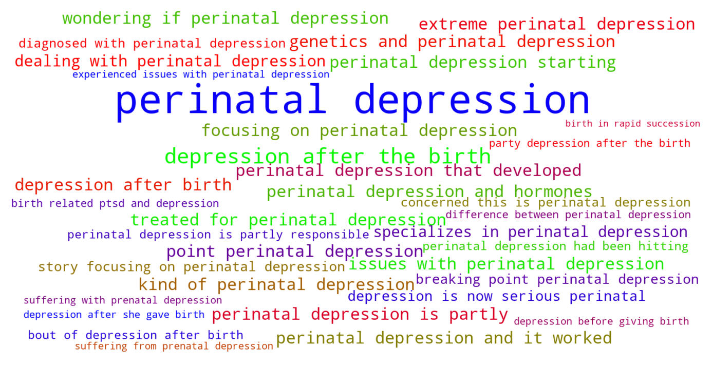
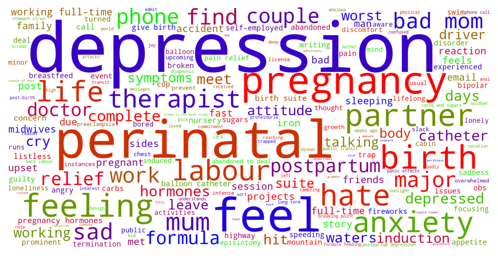

Jump to section:
Samples from Social CorpusHits per UMLS Alias on Social Corpus
Word Cloud Comparison
Embedding Space Comparison
Nearest Neighbors by Semantic Type
Related Analysed Concepts
Samples from Social Corpus
Suffering through perinatal depression Feeling like I am on the most up and down rollercoaster of my life and really starting to worry about my well-being and baby's well-being once they're in the world .
Confidence: 1.000. Reddit link
I was treated for perinatal depression and it worked for awhile .
Confidence: 0.845. Reddit link
I'd like you to meet Remy ( induction turned natural FAST labour , fast + talipes , postpartum preeclampsia , iron infusion ) I'd like for you all to meet my beautiful daughter [ Remy ]( If anyone is interested in a rambling pregnancy story focusing on perinatal depression , hypermesis gravidarum , and IUGR monitoring I'd be happy to also share that .
Confidence: 0.756. Reddit link
Feeling guilty about napping so much and wondering if perinatal depression is partly responsible .
Confidence: 0.725. Reddit link
During my first trimester I had extreme perinatal depression .
Confidence: 0.845. Reddit link
I can say very clearly that I am suffering from prenatal depression and anxiety .
Confidence: 0.662. Reddit link
I'm 24 weeks pregnant today , and I suddenly realized my depression is now serious perinatal depression .
Confidence: 1.000. Reddit link
perinatal depression hello , I didn't really know where to take this to .
Confidence: 1.000. Reddit link
My pregnancy was horrific ( weird illness no one believed I had that they're still trying to figure out ) I have pregnancy and birth related ptsd and depression and anxiety , still , as well as those weird symptoms that no one believed .
Confidence: 0.696. Reddit link
I just want to be mindful of the depression before giving birth to LO .
Confidence: 0.685. Reddit link
Hits per UMLS Alias on Social Corpus
-
perinatal depression
47 hits
-
birth depression
9 hits
-
perinatal asphyxia
0 hits
-
birth asphyxia
0 hits
-
asphyxia perinatal
0 hits
-
perinatal asphyxia disorder
0 hits
Word Cloud Comparison
Keywords matching C0559477
Keywords matched against concept. Word size represents frequency.
Keywords co-occurring with C0559477
Co-occurrence is measured at the document-level (i.e. Reddit submissions). Frequencies are normalized to account for keywords common to all CUIs.
Embedding Space Comparison
T-SNE comparison for word embeddings learned from medical domain (EuroPMC) and social media (Reddit) independently.
Pearson correlation for union of closest 1000 neighbors: 0.286
Nearest Neighbors by Semantic Type
Most similar concepts in each of the selected UMLS semantic types. Based on concept embeddings from social corpus.
T046 (Pathologic Function)
-
C0559477
Perinatal depression
1.000 Similarity
-
C2909751
Physical abuse pregnancy
0.615 Similarity
-
C0015927
Iud
0.612 Similarity
-
C0156677
Eclampsia pregnancy
0.610 Similarity
-
C0015959
Fetal maternal bleed
0.607 Similarity
-
C0032993
Post dates
0.606 Similarity
-
C1405800
Postpartum pre eclampsia
0.598 Similarity
-
C0344310
Pregnancy stretch mark
0.585 Similarity
T048 (Mental or Behavioral Dysfunction)
-
C0588006
Mild depression
0.926 Similarity
-
C0221074
Postpartum depression
0.919 Similarity
-
C4735566
Depression teen
0.910 Similarity
-
C0011570
Depression
0.904 Similarity
-
C0338908
Anxiety depression
0.901 Similarity
-
C0588008
Severe depression
0.898 Similarity
-
C2362914
Clinical depression
0.891 Similarity
-
C5229470
Antenatal depression
0.889 Similarity
T061 (Therapeutic or Preventive Procedure)
-
C0740218
Depression screen
0.877 Similarity
-
C0204523
Psychiatric care
0.740 Similarity
-
C0150135
Reducing anxiety
0.679 Similarity
-
C0587037
Postnatal appointment
0.668 Similarity
-
C0024820
Marriage counseling
0.628 Similarity
-
C2827950
Existing treatment
0.627 Similarity
-
C0033968
Talk therapy
0.625 Similarity
-
C1279738
Acknowledging anxiety
0.620 Similarity
T184 (Sign or Symptom)
-
C0086132
Depression symptoms
0.868 Similarity
-
C0497307
Feeling depressed
0.728 Similarity
-
C0233401
Mental symptoms
0.718 Similarity
-
C0522179
Death anxiety
0.645 Similarity
-
C0860603
Anxiety symptoms
0.637 Similarity
-
C0281856
Body general pain
0.628 Similarity
-
C0751408
Physical suffering
0.619 Similarity
-
C0034880
Oversensitive hearing
0.593 Similarity
T079 (Temporal Concept)
-
C0178795
Perinatal
0.779 Similarity
-
C2936491
Peripartum
0.688 Similarity
-
C0024915
Maternal age
0.627 Similarity
-
C2828394
Antenatal
0.621 Similarity
-
C0086839
Postpartum
0.610 Similarity
-
C0456336
Antepartum
0.592 Similarity
-
C2826771
Birth year
0.588 Similarity
-
C1552607
Act relationship subset previous
0.577 Similarity
T041 (Mental Process)
-
C0871504
Test anxiety
0.718 Similarity
-
C0392348
Ideation
0.676 Similarity
-
C0025353
Mental health
0.662 Similarity
-
C0085380
Dental anxiety
0.636 Similarity
-
C0677838
Grief loss
0.633 Similarity
-
C0017324
Generalization
0.630 Similarity
-
C0598705
Age mental
0.622 Similarity
-
C0577602
Anxious parents
0.611 Similarity
T101 (Patient or Disabled Group)
-
C0748064
Inpatient psychiatric
0.680 Similarity
-
C0032804
Postpartum women
0.546 Similarity
-
C0242810
Abusing women
0.540 Similarity
-
C0871503
Dying patients
0.536 Similarity
-
C0338666
Drug user
0.531 Similarity
-
C0025360
Ill mentally
0.500 Similarity
-
C0687689
Aod abuser
0.500 Similarity
-
C0260101
Sick child
0.497 Similarity
T060 (Diagnostic Procedure)
-
C0033053
Prenatal diagnoses
0.679 Similarity
-
C0025365
Test mental
0.614 Similarity
-
C0033905
Test psychological
0.609 Similarity
-
C0860888
Ct spirals
0.562 Similarity
-
C0740178
Prenatal screening
0.557 Similarity
-
C0032976
Pregnancy test
0.548 Similarity
-
C3494278
Maternal serum screening tests
0.543 Similarity
-
C0302488
Specialized medical examination
0.532 Similarity
T047 (Disease or Syndrome)
-
C0234533
Generalized seizure
0.678 Similarity
-
C0034040
Postpartum disorder
0.647 Similarity
-
C0683323
Physical illness
0.645 Similarity
-
C0151864
Disorder pregnancy
0.644 Similarity
-
C0264746
Chorea gravidarum
0.629 Similarity
-
C0042251
Vaginosis
0.622 Similarity
-
C0018799
Heart trouble
0.621 Similarity
-
C0023343
Leprosy nos
0.619 Similarity
T067 (Phenomenon or Process)
-
C0035020
Relapse
0.627 Similarity
-
C0023983
Long term effects
0.542 Similarity
-
C0337240
Fall while being carried
0.539 Similarity
-
C0870455
Early childhood development
0.488 Similarity
-
C1615608
Pandemic
0.488 Similarity
-
C0677038
Increase pressure
0.469 Similarity
-
C5197751
Sea level rise
0.467 Similarity
-
C0023672
Experience life
0.465 Similarity
T201 (Clinical Attribute)
-
C1514593
Psychological impact
0.611 Similarity
-
C0012655
Predisposition
0.565 Similarity
-
C0814118
Fetal vulnerability
0.552 Similarity
-
C3174092
Medication dose
0.535 Similarity
-
C2984554
Emotional well being
0.532 Similarity
-
C1286282
Birth outcomes
0.529 Similarity
-
C0032930
Trigger
0.526 Similarity
-
C0521982
Successful treatment
0.514 Similarity
T037 (Injury or Poisoning)
-
C1959898
Traumatic injury during pregnancy
0.605 Similarity
-
C0005604
Traumatic birth
0.602 Similarity
-
C0043251
Trauma
0.559 Similarity
-
C0282350
Sexual abuse
0.557 Similarity
-
C3544104
Exposure during pregnancy
0.554 Similarity
-
C0814673
Abuse physical emotional
0.545 Similarity
-
C0018674
Head injury
0.539 Similarity
-
C0269858
Traumatic lesion during delivery
0.539 Similarity
T054 (Social Behavior)
-
C0582101
Talking about dying
0.603 Similarity
-
C0235132
Oppression
0.601 Similarity
-
C1319178
Coping family
0.554 Similarity
-
C0021797
Relations with other people
0.552 Similarity
-
C0686779
Abusive emotional relationship
0.548 Similarity
-
C0686790
Abusive sexual relationship with husband
0.541 Similarity
-
C0815201
Couple relations
0.538 Similarity
-
C0015608
Family life
0.526 Similarity
T032 (Organism Attribute)
-
C2362326
Sexual health
0.600 Similarity
-
C0598779
Life history
0.592 Similarity
-
C3714565
Physical condition
0.561 Similarity
-
C0871078
Physical attractiveness
0.528 Similarity
-
C0017504
Gestational age
0.528 Similarity
-
C4086849
Sex at birth
0.503 Similarity
-
C0005612
Weight baby
0.487 Similarity
-
C1954788
Gestational age weeks
0.475 Similarity
T019 (Congenital Abnormality)
-
C1737329
Dysmorphia
0.592 Similarity
-
C0041022
Fallot triad
0.517 Similarity
-
C4721530
Sparse hair since birth
0.517 Similarity
-
C0000768
Birth defect
0.503 Similarity
-
C0018817
Asd
0.503 Similarity
-
C0432185
Absent muscles since birth
0.500 Similarity
-
C0027794
Neural tube defect
0.496 Similarity
-
C0266449
Brain malformation
0.488 Similarity
T023 (Body Part, Organ, or Organ Component)
-
C0224141
Mentalis
0.574 Similarity
-
C0007776
Grey matter
0.527 Similarity
-
C0521421
Entire ear
0.527 Similarity
-
C0018787
Heart
0.527 Similarity
-
C1518646
Other body part
0.519 Similarity
-
C0930593
Bony part hard palate
0.503 Similarity
-
C1268110
Heart part
0.502 Similarity
-
C0921178
Right frontalis
0.494 Similarity
T042 (Organ or Tissue Function)
-
C0013010
Brain laterality
0.565 Similarity
-
C1959585
Heart rate control
0.494 Similarity
-
C0005778
Clotting
0.493 Similarity
-
C1749797
Heart development
0.492 Similarity
-
C0312426
Hormone production
0.491 Similarity
-
C0920880
Stabilizer
0.488 Similarity
-
C4250378
Neural induction
0.487 Similarity
-
C2753527
Heart induction
0.484 Similarity
T200 (Clinical Drug)
-
C3218395
Papain pill
0.561 Similarity
-
C3216620
Progesterone vaginal product
0.483 Similarity
-
C5222490
Progesterone injection
0.424 Similarity
-
C1247687
Progesterone suppositories vaginal
0.397 Similarity
-
C0723917
Triple antibiotic ointment
0.393 Similarity
-
C1247002
Misoprostol oral tablet
0.387 Similarity
-
C0982568
Multi vitamin inj
0.374 Similarity
-
C4048176
Oxytocin injection
0.369 Similarity
T074 (Medical Device)
-
C0593622
Home pregnancy test
0.552 Similarity
-
C0085104
System
0.513 Similarity
-
C0043305
Intensifying screen xray
0.469 Similarity
-
C1956079
Dressing negative pressure
0.469 Similarity
-
C0179188
Back brace
0.452 Similarity
-
C1875469
Med pass
0.445 Similarity
-
C0466917
Plate pressure
0.444 Similarity
-
C0180236
Curetting
0.443 Similarity
T039 (Physiologic Function)
-
C3178752
Effect fertility
0.552 Similarity
-
C0149784
Reaction stress
0.513 Similarity
-
C2256369
Heart process
0.499 Similarity
-
C3852954
Physiome
0.499 Similarity
-
C0599423
Joint stress
0.475 Similarity
-
C0025320
Change
0.447 Similarity
-
C0442695
Bearing down
0.441 Similarity
-
C3179159
Sedative effects
0.431 Similarity
T034 (Laboratory or Test Result)
-
C0427780
Negative pregnancy test
0.546 Similarity
-
C0240802
Positive pregnancy test
0.545 Similarity
-
C2266672
Clotting time finding
0.538 Similarity
-
C0427777
Pregnancy results tests
0.536 Similarity
-
C0588465
Sperm forward progression
0.502 Similarity
-
C0743295
Drug positive screen
0.492 Similarity
-
C0456984
Test results
0.480 Similarity
-
C3898879
Triple positive
0.474 Similarity
T059 (Laboratory Procedure)
-
C0368930
Clotting time
0.519 Similarity
-
C1287355
Hormone levels
0.513 Similarity
-
C0200896
Cytogenetic studies
0.509 Similarity
-
C0850355
Pregnancy blood test
0.502 Similarity
-
C0430065
Standard pregnancy test
0.499 Similarity
-
C0040130
Thyroid tests
0.496 Similarity
-
C0038577
Drug tested
0.488 Similarity
-
C0545131
Cbc diff
0.487 Similarity
T049 (Cell or Molecular Dysfunction)
-
C4725191
Stop lost
0.513 Similarity
-
C0544885
Stop gain
0.493 Similarity
-
C1705285
Mutated
0.433 Similarity
-
C0008628
Del
0.412 Similarity
-
C0002938
Aneuploidy
0.406 Similarity
-
C0008625
Chromosomal abnormality
0.401 Similarity
-
C4725190
Start lost
0.397 Similarity
-
C0041107
Trisomy
0.396 Similarity
T190 (Anatomical Abnormality)
-
C0920299
Overriding toe
0.509 Similarity
-
C0332482
Distortion
0.495 Similarity
-
C4732742
Hole center heart
0.483 Similarity
-
C0302142
Anatomic abnormality
0.428 Similarity
-
C4025734
Anomaly scalp
0.418 Similarity
-
C0269185
Tipped uterus
0.417 Similarity
-
C0596028
Overjet
0.411 Similarity
-
C4025319
Head stopped growing
0.409 Similarity
T018 (Embryonic Structure)
-
C0440731
Fetal brain
0.505 Similarity
-
C1284022
Trilaminar disc
0.452 Similarity
-
C1278988
Entire placenta
0.433 Similarity
-
C0015965
Fetal
0.416 Similarity
-
C0015935
Fetal heart
0.406 Similarity
-
C0553498
Gestational sac
0.405 Similarity
-
C0032043
Placenta
0.391 Similarity
-
C0008503
Chorionic
0.384 Similarity
T044 (Molecular Function)
-
C1167622
Physical interaction
0.505 Similarity
-
C1749457
Ligands activity
0.441 Similarity
-
C1150342
Dopachrome rearranging enzyme
0.439 Similarity
-
C1149397
Heartless ligand
0.426 Similarity
-
C2917236
Vmat interactions
0.416 Similarity
-
C1148613
Binding iron
0.416 Similarity
-
C0010357
Cross reactive
0.414 Similarity
-
C0887940
Gene arrangements
0.408 Similarity
T100 (Age Group)
-
C0205653
Teenager
0.501 Similarity
-
C0678804
Prenatal
0.496 Similarity
-
C4048294
Preterm baby
0.493 Similarity
-
C0008059
Child
0.475 Similarity
-
C3494262
Extremely preterm infant
0.465 Similarity
-
C0680085
Early adulthood
0.461 Similarity
-
C1444711
Preteen
0.455 Similarity
-
C0728836
Young child
0.447 Similarity
T005 (Virus)
-
C1220459
Hart park group
0.498 Similarity
-
C3743464
Mycobacteriophage whirlwind
0.460 Similarity
-
C4415400
Phage wrath
0.459 Similarity
-
C5058350
Fairfax lookout virus
0.439 Similarity
-
C3768023
Mycobacteriophage conspiracy
0.436 Similarity
-
C0206419
Coronavirus
0.405 Similarity
-
C0026399
Momsv
0.379 Similarity
-
C3949524
Mischivirus
0.371 Similarity
T031 (Body Substance)
-
C1446336
Multiple plaques
0.439 Similarity
-
C0392908
Secretion vaginal
0.424 Similarity
-
C0007806
Spinal fluid
0.411 Similarity
-
C3532405
Swab from placenta
0.404 Similarity
-
C0229671
Serum
0.404 Similarity
-
C0439057
Early morning urine
0.399 Similarity
-
C0242216
Gall stones
0.397 Similarity
-
C0025111
Wastes medical
0.388 Similarity
T007 (Bacterium)
-
C0022828
L forms
0.432 Similarity
-
C1015849
Wigglesworthia
0.414 Similarity
-
C0018154
Gram positive bacteria
0.412 Similarity
-
C0597134
Flora oral
0.406 Similarity
-
C0995648
Genus quinella
0.377 Similarity
-
C4169658
Convivina
0.355 Similarity
-
C3137302
Brownia
0.350 Similarity
-
C3801085
Enorma
0.330 Similarity
T195 (Antibiotic)
-
C0718950
Biomox
0.350 Similarity
-
C0013090
Doxycycline
0.348 Similarity
-
C0003232
Antibiotics
0.344 Similarity
-
C0723285
Septa
0.325 Similarity
-
C0310367
Today
0.312 Similarity
-
C1564058
Roxi basics
0.310 Similarity
-
C2830187
Prospec
0.284 Similarity
-
C0076686
Timentin
0.272 Similarity